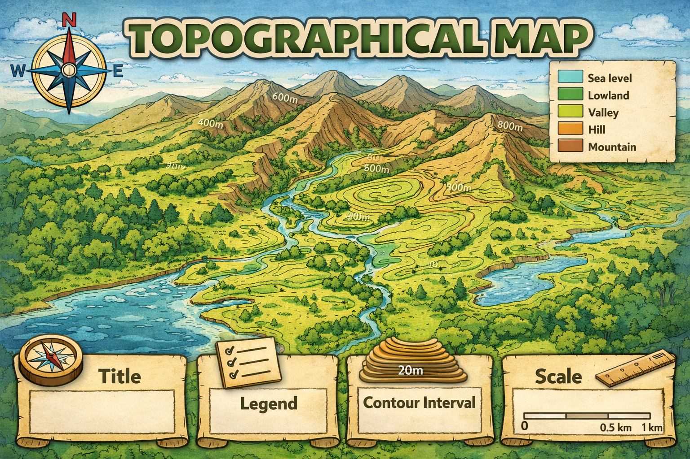

Interactive Poster
Topographic Map
Explore how topographic maps show the shape, height, and features of the land.

Compass
Sea level
Title
Legend / Map Key
Contour lines
Scale
Contour interval
Comprehension Exercise
Read the poster carefully. Then type your answers in the spaces below.